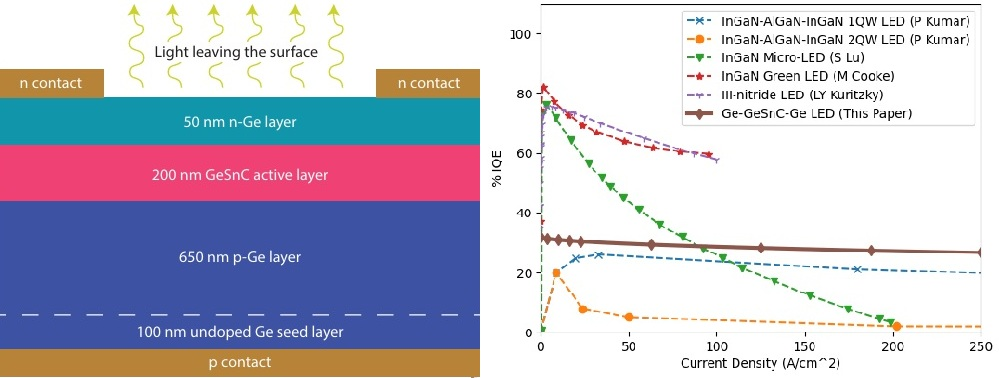
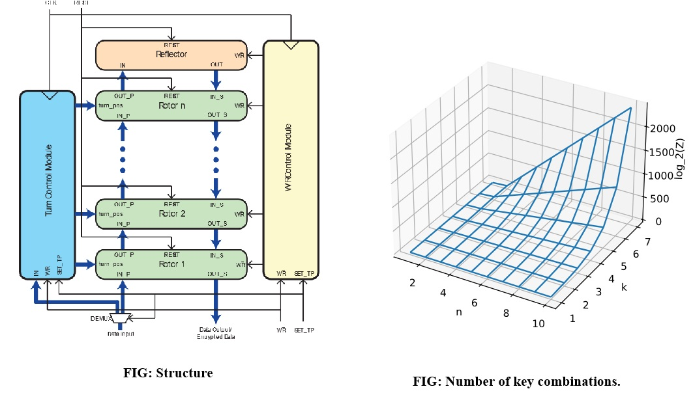

Optoelectric Properties in semiconductor alloys
I analyze alloy properties using predictive models and employ Finite Element Method (FEM) and Finite-Difference Time-Domain (FDTD) numerical tools—specifically COMSOL Multiphysics and Ansys Lumerical—for the optimization and characterization of optoelectronic devices. The integration of AI has significantly streamlined the optimization of device configurations. In collaboration with my team, I have demonstrated promising results for future LED technology utilizing group IV materials, advancing Si/Ge-compatible photonics.

Cryptographic Accelerator
This research aims to design and implement features of an encryption system inspired by the Enigma Machine, providing theoretical and practical insights into its functionality and resilience against attacks. Our proposed system accepts n-bit data through a data bus as input and provides n-bit encrypted data at each positive edge of the clock. The digital adaptation of the system makes the encryption even stronger and harder to crack. A case study confirms the credibility of both the encryption and decryption systems by successfully retrieving the original message after it is encrypted. All the simulation results are generated through the Xilinx Vivado software. Through comparative analysis with standard AES encryption, it is confirmed that our system offers better resistance to brute-force attacks.
